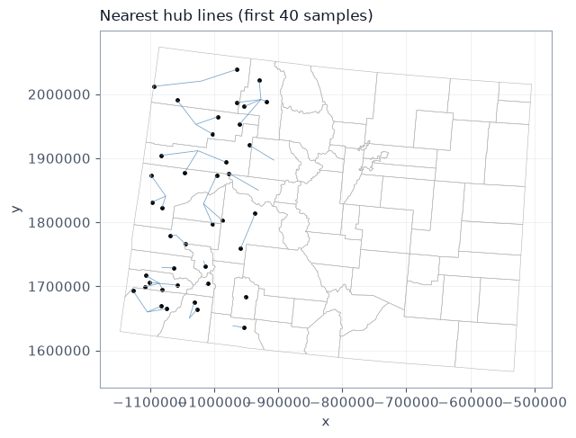
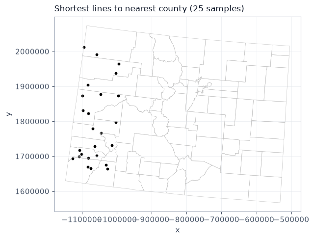
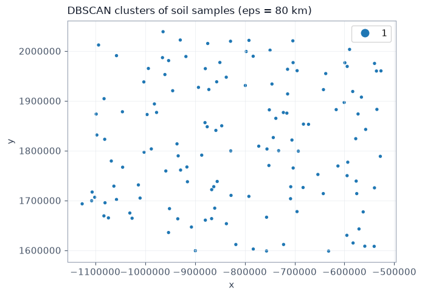
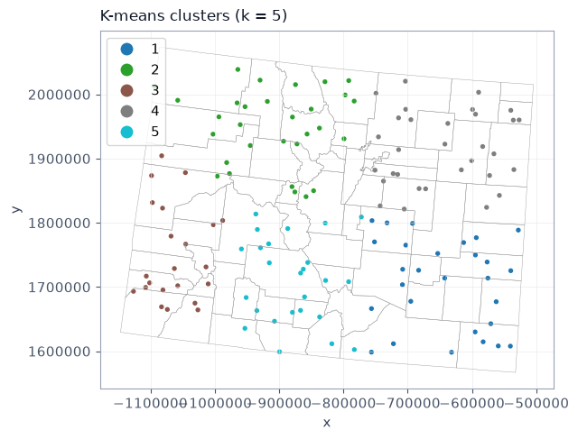
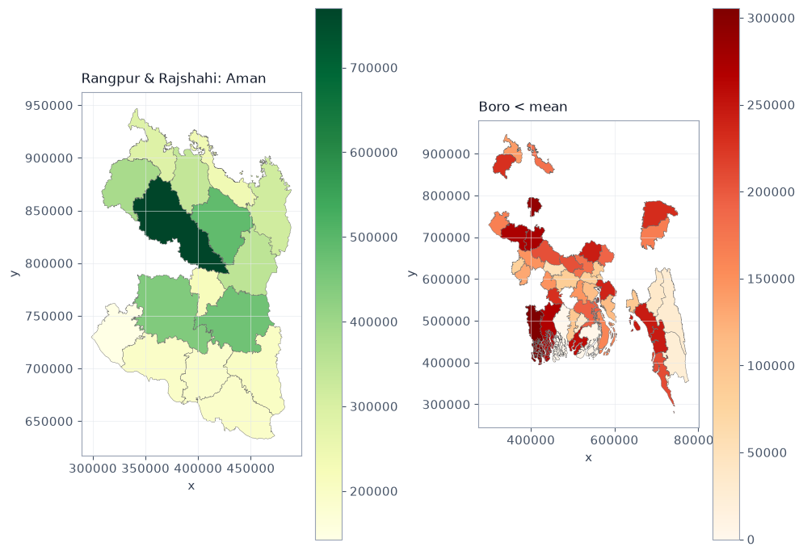
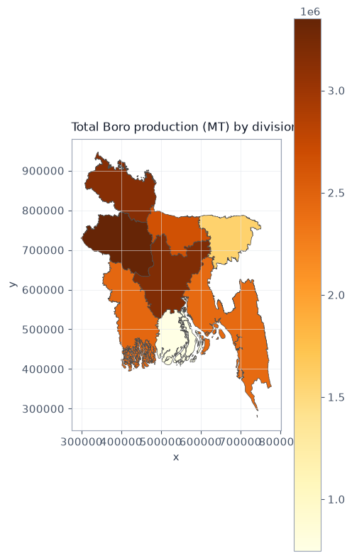
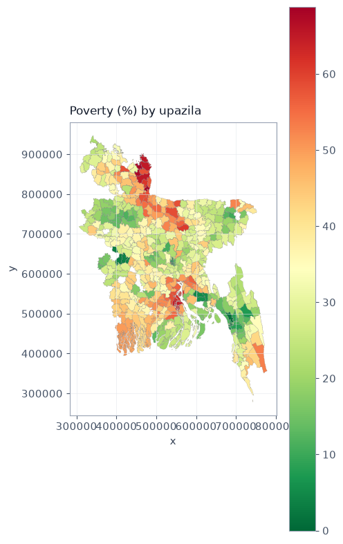
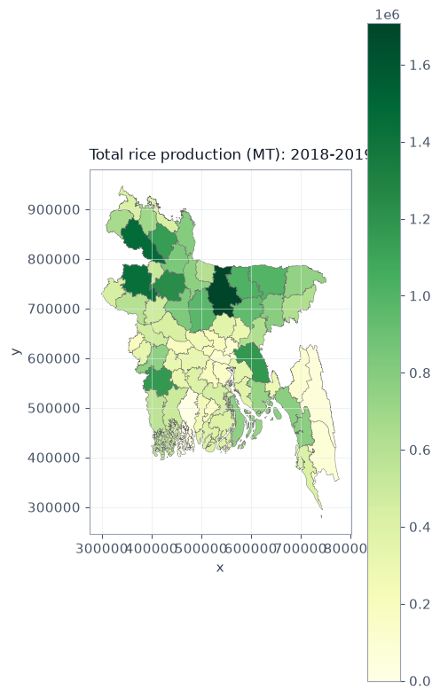

Vector data analysis is a foundational aspect of geographic data science, enabling users to interrogate, summarize, and manipulate the descriptive and geometric properties of spatial datasets. GeoLattice offers a comprehensive suite of tools for vector analysis, allowing you to compute attribute statistics, measure spatial relationships, perform overlay operations, and construct new geometries programmatically. In this notebook, you’ll explore common vector analysis techniques using GeoLattice and learn efficient workflows for extracting insights from spatial data.
Overview
Vector analysis tools summarize attribute tables, measure spatial relationships, and build new geometry from existing layers. GeoLattice implements them in geolattice.spatial_analysis.vector_analysis (also geolattice.vector.vector_analysis) and exports them from geolattice.vector. The API follows common desktop GIS vector analysis operations (QGIS Vector analysis) and attribute workflows from sf / dplyr.
The notebook is organized in two parts:
Part 1: Spatial / statistical analysis on shapefiles in Data/00_shared/vector_data/USA, grouped by five broader functions:
Attribute statistics
Distance and proximity
Clustering and spatial pattern
Overlay and aggregation
Geometry summary
Part 2: Attribute manipulation on Bangladesh rice districts, upazilas, and poverty tables in Data/00_shared/vector_data/Bangladesh and data/tabular_data
Setup
The next cell finds the repository root, puts it on the import path, applies the tutorial map style, and defines helpers to open USA and Bangladesh layers.
Spatial tools come from geolattice.spatial_analysis.vector_analysis (also geolattice.vector.vector_analysis). Attribute tools come from the same geolattice.vector export surface. Maps use plot_layer and related helpers from geolattice.viz.
Installation. This notebook needs installation option 1 (vector, raster, CRS and visualization): pip install "geolattice[core]". See “Installation options” in the GeoLattice README.
Code
# Display matplotlib figures inline in this Jupyter notebook.%matplotlib inline# Standard library imports for time helpers.from datetime import datetime, timedelta # date helpers (available for temporal demos)from pathlib import Path # filesystem paths for locating sample layers# Third-party geospatial / plotting stack used throughout the notebook.import geopandas as gpd # GeoDataFrame I/O and geometry helpersimport matplotlib.pyplot as plt # figure and axes creation for mapsimport numpy as np # array ops for synthetic Z profiles and numeric transformsimport pandas as pd # tabular display and attribute joinsfrom IPython.display import display # rich table previews in the notebookfrom shapely.geometry import LineString, Point # build 3D lines for climb_along_line
Code
# ===================================================================# Setup and helpers for vector analysis and attribute tools.# Import GeoLattice, point DATA/BD/TABULAR at sample folders, and define# read_layer() for opening shapefiles as GeoDataFrames.# ===================================================================# The installed package lives in src/; the repository root is its parent.import geolatticeROOT = Path(geolattice.__file__).resolve().parents[1]ifnot (ROOT /"Data").is_dir():raiseFileNotFoundError("Could not find the GeoLattice repository root.")# Import the vector analysis and attribute helpers used below.from geolattice.vector import ( aggregate_attributes, # dissolve / group-by attribute aggregation basic_statistics_for_fields, # min/max/mean/std for one field calculate_fields, # derive new columns from expressions climb_along_line, # elevation gain/loss along 3D line vertices count_points_in_polygon, # point-in-polygon counts (optional weights) dbscan_clustering, # density-based spatial clusters distance_matrix, # origin-destination distance matrix distance_to_nearest_hub_lines, # sample-to-hub connector lines distance_to_nearest_hub_points, # sample-to-hub distance table drop_geometry, # attribute table only (plain DataFrame) filter_features, # query / subset rows by expression join_attributes, # tabular join on a key field join_by_lines, # hub-spoke lines for matching IDs kmeans_clustering, # fixed-k centroid clusters list_unique_values, # distinct values and frequencies mean_coordinates, # center of mass of feature centroids nearest_neighbour_analysis, # Clark-Evans nearest-neighbour index open_vectors_data, # open a vector dataset path overlap_analysis, # polygon overlap area and percent rename_fields, # rename attribute columns reshape_attributes, # long <-> wide reshape select_fields, # keep a subset of columns shortest_line_between_features, # shortest connector to nearest feature sort_features, # sort rows by one or more fields statistics_by_categories, # grouped stats by category field stdbscan_clustering, # space-time DBSCAN clusters string_field, # string case / slice helpers sum_line_lengths, # total line length and count per polygon transform_field, # apply a numeric transform to a column update_where, # conditional field updates)from geolattice.viz import apply_map_style, plot_layer, plot_pair, style_axes # map styling helpers# Paths to the USA, Bangladesh, and tabular sample data folders.DATA = ROOT /"Data"/"00_shared"/"vector_data"/"USA"# USA shapefilesBD = ROOT /"Data"/"00_shared"/"vector_data"/"Bangladesh"# Bangladesh shapefilesTABULAR = ROOT /"Data"/"00_shared"/"tabular_data"# CSV attribute tablesassert DATA.is_dir(), DATA # fail early if USA data is missingassert BD.is_dir(), BD # fail early if Bangladesh data is missingassert TABULAR.is_dir(), TABULAR # fail early if tabular data is missing# Compact pandas display defaults for notebook tables.pd.set_option("display.max_columns", 12) # show up to 12 columnspd.set_option("display.max_colwidth", 48) # truncate long cell textpd.set_option("display.width", 120) # wider text wrapping for printsapply_map_style() # apply the GeoLattice tutorial matplotlib map defaultsdef read_layer(relative, base=DATA):"""Open one shapefile and return a GeoDataFrame without the reader fid.""" path = base / relative # absolute path to the shapefilewith open_vectors_data(path) as dataset: # open via the GeoLattice vector reader frame = dataset.to_dataframe() # materialize features as a table crs = frame.crs # remember the layer CRSif"fid"in frame.columns: # drop internal feature id if present frame = frame.drop(columns="fid")return gpd.GeoDataFrame(frame, geometry="geometry", crs=crs) # ensure GeoDataFrame typeprint(f"USA data: {DATA}") # confirm USA folderprint(f"Bangladesh data: {BD}") # confirm Bangladesh folderprint(f"Tabular data: {TABULAR}") # confirm tabular folder
USA data: /home/zia207/Github/GeoLattice/Data/00_shared/vector_data/USA
Bangladesh data: /home/zia207/Github/GeoLattice/Data/00_shared/vector_data/Bangladesh
Tabular data: /home/zia207/Github/GeoLattice/Data/00_shared/tabular_data
Available analysis tools
Each function below is imported from geolattice.vector. Distances and areas use the coordinate units of the layer unless a ground unit is requested for hub distances. Project geographic layers to a metre or foot CRS before using ground distances for clustering and neighbour tools.
Attribute statistics
Summarize field values, unique lists, and grouped stats.
Tool
Function
What it does
Basic statistics for fields
basic_statistics_for_fields()
Summarizes one attribute column. Numeric fields get count, unique, min, max, mean, median, quartiles, and related stats. Text fields get length statistics.
List unique values
list_unique_values()
Lists distinct attribute values (or combinations) and their counts.
Statistics by categories
statistics_by_categories()
Field statistics within category groups, or row counts when no value field is given.
Distance and proximity
Measure how far features are from each other, or link each feature to its nearest hub or destination.
Tool
Function
What it does
Distance matrix
distance_matrix()
Builds point-to-point distances. Output can be linear (one row per pair), standard (wide matrix), or summary (mean, min, max per origin).
Distance to nearest hub (lines)
distance_to_nearest_hub_lines()
Draws a line from each feature to its nearest hub and stores hub name and distance.
Distance to nearest hub (points)
distance_to_nearest_hub_points()
Keeps each feature location as a point with nearest hub name and distance.
Join by lines (hub lines)
join_by_lines()
Connects hubs and spokes that share an ID field. Alias: hub_lines. Optional geodesic lines and antimeridian splitting.
Shortest line between features
shortest_line_between_features()
Creates the shortest link from each source feature to nearest destinations (nearest point on geometry or centroid distance).
Clustering and spatial pattern
Group features in space (and time) or test whether points are clustered or dispersed.
Tool
Function
What it does
DBSCAN clustering
dbscan_clustering()
Clusters point features with DBSCAN. Parameters are minimum cluster size and neighbourhood radius (eps) in layer units.
K-means clustering
kmeans_clustering()
Partitions feature centroids into k clusters with farthest-point or k-means++ seeding.
ST-DBSCAN clustering
stdbscan_clustering()
Spatiotemporal DBSCAN: neighbours must be within eps in space and eps2 in time.
Nearest neighbour analysis
nearest_neighbour_analysis()
Clark-Evans nearest-neighbour index for a point layer (observed vs expected mean distance, Z-score). US spelling alias: nearest_neighbor_analysis.
Overlay and aggregation
Count, sum, or measure how features from one layer fall inside or across polygons of another.
Tool
Function
What it does
Count points in polygon
count_points_in_polygon()
Counts points inside each polygon. Optional weight field sums values; optional class field counts distinct classes.
Overlap analysis
overlap_analysis()
For each input polygon, measures overlap area and percentage covered by one or more overlay layers.
Sum line lengths
sum_line_lengths()
Sums line length and count of lines crossing each polygon.
Geometry summary
Derive representative locations or elevation change from feature geometry.
Tool
Function
What it does
Mean coordinates
mean_coordinates()
Computes center of mass of feature centroids, optionally weighted and grouped by an ID field.
Climb along line
climb_along_line()
Totals climb and descent along 3D line vertices and records minimum and maximum elevation per line.
Shared rules
Inputs can be a GeoDataFrame, a GeoSeries, a pandas DataFrame with a geometry column, Shapely geometry, WKT, GeoJSON geometry, sequences of those, VectorFeature objects, or an open vector layer from open_vectors_data(). Spatial results are GeoDataFrames when GeoPandas is installed; table-only tools return pandas DataFrames.
When two layers have different CRS definitions, the second layer is reprojected to the first. Geographic CRS layers trigger a warning when planar distance or area is used.
Available attribute tools
These tools mirror the attribute workflows in the R tutorial (R_Code/vector-attribute-manipulation-r.qmd).
Task
Function
What it does
Filtering
filter_features()
Keeps features that match a query string or boolean mask
Select columns
select_fields()
Keeps named attributes; geometry is retained
Rename
rename_fields()
Renames attribute columns
Attribute calculation
calculate_fields()
Creates or overwrites fields from expressions or callables
Grouping and aggregation
aggregate_attributes()
Groups by attributes and aggregates (optionally dissolves geometries)
Sorting
sort_features()
Orders features by attribute values
Joining
join_attributes()
Joins a table or layer onto features by a common key
Attribute transformation
transform_field()
Applies a function to one column
String manipulation
string_field()
Text operations (lower, upper, title, slice, replace, …)
Conditional updating
update_where()
Updates fields where a condition is true
Reshaping
reshape_attributes()
Melts (wide->long) or pivots (long->wide)
Drop geometry
drop_geometry()
Returns the attribute table without geometries
Part 1: Spatial analysis (USA)
Part 1 walks through the analysis tools in five functional groups: attribute statistics, distance and proximity, clustering and spatial pattern, overlay and aggregation, and geometry summary.
Load data
Layers come from Data/00_shared/vector_data/USA:
Colorado soil-sample points (CO_SOC_data.shp)
Colorado county polygons (US_COUNTY.shp, filtered to Colorado)
US state boundaries (US_STATE.shp) and Yellowstone (Yellow_Stone.shp) for overlap examples
Onondaga County street centerlines (Ononda_Street_PROJ.shp) and New York counties (NY_County_PROJ.shp) for line-length totals
Soil samples are rebuilt from the x and y fields in Albers metres, matching the other USA layers.
Code
# Load the USA layers used in Part 1 (states, counties, streets, park, soil samples).states = read_layer("US_STATE.shp") # US state polygonscounties = read_layer("US_COUNTY.shp") # US county polygonsstreets = read_layer("Ononda_Street_PROJ.shp") # Onondaga County street centerlines (projected)ny_counties = read_layer("NY_County_PROJ.shp") # New York county polygons (same CRS as streets)park = read_layer("Yellow_Stone.shp") # Yellowstone park polygon for overlap demossamples_raw = read_layer("CO_SOC_data.shp") # Colorado soil organic carbon sample points# Rebuild sample geometries from explicit x/y columns and match the states CRS.samples = samples_raw.set_geometry(gpd.points_from_xy(samples_raw["x"], samples_raw["y"])) # build points from x/ysamples = samples.set_crs(states.crs) # align CRS with the state layer# Subset states/counties used repeatedly below.colorado = states.loc[states["STATE"] =="Colorado"].copy() # Colorado state outlineco_counties = counties.loc[counties["STATE"] =="Colorado"].copy() # Colorado counties onlywyoming = states.loc[states["STATE"] =="Wyoming"].copy() # Wyoming for park overlapmontana = states.loc[states["STATE"] =="Montana"].copy() # Montana for park overlap# County seats as hubs: one representative point per county for hub-distance demos.hub_points = co_counties.copy() # copy county attributes onto hub pointshub_points["geometry"] = co_counties.geometry.representative_point() # interior point per county# Synthetic collection time for ST-DBSCAN (spread over one year by sample ID).samples = samples.assign( collected=pd.to_datetime("2020-01-01") # start date for the synthetic timeline+ pd.to_timedelta(samples["ID"].astype(int), unit="D") # offset each sample by its ID in days)print(f"Soil samples: {len(samples)}") # number of Colorado soil pointsprint(f"Colorado counties: {len(co_counties)}") # number of county polygonsprint(f"Street segments (Onondaga): {len(streets)}") # number of street featuresprint(f"New York counties: {len(ny_counties)}") # number of NY countiesdisplay(samples[["ID", "COUNTY", "SOC", "Longitude", "Latitude"]].head()) # preview key columns
Soil samples: 136
Colorado counties: 64
Street segments (Onondaga): 999
New York counties: 83
ID
COUNTY
SOC
Longitude
Latitude
0
1
Moffat County
6.439
-109.04304
40.44604
1
2
Montezuma County
2.821
-108.91701
37.58697
2
3
Mesa County
2.760
-108.87637
39.21424
3
4
Mesa County
10.535
-108.79555
38.84402
4
5
Garfield County
5.528
-108.74193
39.50625
Attribute statistics
Summarize field values, unique lists, and grouped stats.
Basic statistics for fields
basic_statistics_for_fields() summarizes one column of the attribute table. Here we summarize organic carbon (SOC) in the soil samples.
Code
# Summarize the SOC (soil organic carbon) field across all samples.soc_stats = basic_statistics_for_fields(samples, "SOC") # min/max/mean/std and related statsdisplay(soc_stats.T.head(12)) # transpose so each statistic is a rowprint(f"Field summarized: {soc_stats.attrs['field']}") # confirm which field was summarized
0
COUNT
136.000000
UNIQUE
136.000000
EMPTY
0.000000
FILLED
136.000000
MIN
0.152000
MAX
30.473000
RANGE
30.321000
SUM
984.789000
MEAN
7.241096
MEDIAN
5.133000
STD_DEV
5.912490
CV
0.816519
Field summarized: SOC
List unique values
List distinct values and how often they appear. Multiple fields produce one row per unique combination.
Code
# List distinct county names and how often each appears among the samples.by_county = list_unique_values(samples, "COUNTY") # one field: unique countiesby_state_county = list_unique_values(samples, ["STATE", "COUNTY"]) # multi-field uniquenessdisplay(by_county.sort_values("COUNT", ascending=False).head()) # most frequent counties firstprint(f"Distinct counties: {by_county.attrs['total_values']}") # total unique county count
COUNTY
COUNT
15
Saguache County
6
30
El Paso County
6
4
Dolores County
5
2
Mesa County
5
47
Baca County
5
Distinct counties: 52
Statistics by categories
Summarize a numeric field within each category. Without values_field, only the row count per category is returned.
Code
# Count samples per county, then compute SOC statistics within each county.counts = statistics_by_categories(samples, "COUNTY") # row counts by countysoc_by_county = statistics_by_categories(samples, "COUNTY", values_field="SOC") # SOC stats by countydisplay(counts.sort_values("COUNT", ascending=False).head()) # counties with the most samplesdisplay(soc_by_county[["COUNTY", "COUNT", "MEAN", "MIN", "MAX"]].head()) # preview SOC summaries
COUNTY
COUNT
15
Saguache County
6
30
El Paso County
6
4
Dolores County
5
2
Mesa County
5
47
Baca County
5
COUNTY
COUNT
MEAN
MIN
MAX
0
Moffat County
4
5.67450
3.935
7.109
1
Montezuma County
3
4.21600
2.821
6.015
2
Mesa County
5
5.64780
0.736
10.535
3
Garfield County
4
5.40325
1.360
9.345
4
Dolores County
5
9.90700
3.782
30.473
Distance and proximity
Measure how far features are from each other, or link each feature to its nearest hub or destination.
Distance matrix
The distance matrix links origin points to destination points. A summary matrix reports mean, standard deviation, min, and max distance to the nearest k targets.
Code
# Build a small origin-destination distance matrix (5 samples x 8 hubs).origins = samples.head(5) # first five soil samples as originstargets = hub_points.head(8) # first eight county hubs as destinations# Summary matrix: for each origin, stats over the nearest 3 destinations.matrix_summary = distance_matrix(origins, targets, matrix_type="summary", nearest_points=3) # nearest-3 summarydisplay(matrix_summary.drop(columns="geometry")) # show the distance table without geometry
InputID
MEAN
STDDEV
MIN
MAX
0
InputID_0
94700.886677
19809.589057
74398.975520
121570.216293
1
InputID_1
246871.151504
22853.839904
222379.215230
277380.629453
2
InputID_2
118320.637383
35472.893122
82625.650562
166695.006764
3
InputID_3
150465.724386
40143.488037
107815.418662
204240.268829
4
InputID_4
87506.593119
32037.199077
57945.670741
132022.337864
Distance to nearest hub
Each soil sample is linked to the nearest county representative point. distance_to_nearest_hub_lines() returns connector lines; distance_to_nearest_hub_points() keeps the sample location and adds hub metadata.
Code
# Connect the first 40 samples to their nearest county hub as lines and as point distances.hub_lines = distance_to_nearest_hub_lines( samples.head(40), # origin samples hub_points, # hub points (one per county) hub_field="COUNTY", # attribute that names each hub unit="kilometers", # report HubDist in kilometres)hub_pts = distance_to_nearest_hub_points( samples.head(40), # same origin samples hub_points, # same hub set hub_field="COUNTY", # hub name field unit="kilometers", # distance units)display(hub_pts[["ID", "COUNTY", "HubName", "HubDist"]].head()) # preview hub assignments# Map: county boundaries, hub connector lines, and sample points.fig, ax = plt.subplots(figsize=(7, 5)) # create the map figureco_counties.boundary.plot(ax=ax, color="0.7", linewidth=0.4) # county outlineshub_lines.plot(ax=ax, color="steelblue", linewidth=0.6, alpha=0.7) # sample-to-hub linessamples.head(40).plot(ax=ax, color="black", markersize=6) # sample pointsstyle_axes(ax, "Nearest hub lines (first 40 samples)") # title and axis stylingfig.tight_layout() # reduce unused whitespaceplt.show() # render the map
ID
COUNTY
HubName
HubDist
0
1
Moffat County
Moffat County
74.398976
1
2
Montezuma County
Montezuma County
40.116563
2
3
Mesa County
Mesa County
39.980045
3
4
Mesa County
Mesa County
23.604289
4
5
Garfield County
Garfield County
57.945671

Join by lines (hub lines)
join_by_lines() draws lines between hubs and spokes that share the same ID. County polygons act as hubs and samples as spokes, matched on county name.
Code
# Draw hub-spoke lines between counties and samples that share the same COUNTY value.matched = join_by_lines( co_counties, # hub polygons (county seats use representative points internally) samples, # spoke points hub_field="COUNTY", # join key on hubs spoke_field="COUNTY", # join key on spokes hub_fields=["COUNTY"], # hub attributes to keep spoke_fields=["ID", "SOC"], # spoke attributes to keep)print(f"Connector lines: {len(matched)}") # number of hub-spoke lines createddisplay(matched[["COUNTY", "ID", "SOC"]].head()) # preview matched attributes
Connector lines: 136
COUNTY
ID
SOC
0
Moffat County
1
6.439
1
Montezuma County
2
2.821
2
Mesa County
3
2.760
3
Mesa County
4
10.535
4
Garfield County
5
5.528
Shortest line between features
For each sample, draw the shortest line to the nearest county polygon (up to one neighbour within 150 km).
Code
# For each of 25 samples, draw the shortest line to the nearest county polygon.shortest = shortest_line_between_features( samples.head(25), # origin samples co_counties, # destination polygons method="nearest_point", # snap to the nearest point on the polygon boundary neighbors=1, # keep only the single nearest county max_distance=150_000, # ignore matches farther than 150 km (layer units: metres))display(shortest[["ID", "COUNTY_1", "COUNTY_2", "distance"]].head()) # preview distances# Map shortest connectors against county boundaries and sample points.fig, ax = plt.subplots(figsize=(7, 5)) # create the map figureco_counties.boundary.plot(ax=ax, color="0.75", linewidth=0.4) # county outlinesshortest.plot(ax=ax, color="crimson", linewidth=0.8) # shortest-line connectorssamples.head(25).plot(ax=ax, color="black", markersize=10) # sample pointsstyle_axes(ax, "Shortest lines to nearest county (25 samples)") # title and axis stylingfig.tight_layout() # reduce unused whitespaceplt.show() # render the map
ID
COUNTY_1
COUNTY_2
distance
0
1
Moffat County
Moffat County
0.0
1
2
Montezuma County
Montezuma County
0.0
2
3
Mesa County
Mesa County
0.0
3
4
Mesa County
Mesa County
0.0
4
5
Garfield County
Garfield County
0.0

Clustering and spatial pattern
Group features in space (and time) or test whether points are clustered or dispersed.
DBSCAN clustering
DBSCAN groups dense clusters of points. eps is in layer units (metres here). Noise points get a null cluster id.
Code
# Cluster soil samples with DBSCAN (min 4 points, 80 km neighbourhood radius).dbscan = dbscan_clustering(samples, min_size=4, eps=80_000) # eps in layer units (metres)print(dbscan["CLUSTER_ID"].value_counts(dropna=False).head()) # cluster sizes (NaN = noise)# Map clusters colored by CLUSTER_ID.fig, ax = plt.subplots(figsize=(7, 5)) # create the map figuredbscan.plot(column="CLUSTER_ID", categorical=True, legend=True, ax=ax, markersize=8) # color by cluster idstyle_axes(ax, "DBSCAN clusters of soil samples (eps = 80 km)") # title and axis stylingfig.tight_layout() # reduce unused whitespaceplt.show() # render the map
CLUSTER_ID
1 136
Name: count, dtype: int64

K-means clustering
K-means partitions feature centroids into a fixed number of clusters. We use five clusters across Colorado samples.
Code
# Partition sample centroids into five K-means clusters (k-means++ seeding).kmeans = kmeans_clustering(samples, n_clusters=5, method="kmeans++", random_state=42) # five spatial clustersprint(f"Clusters found: {kmeans.attrs['num_clusters']}") # confirm k from attrs# Map K-means labels over Colorado county boundaries.fig, ax = plt.subplots(figsize=(7, 5)) # create the map figurekmeans.plot(column="CLUSTER_ID", categorical=True, legend=True, ax=ax, markersize=8) # color by cluster idco_counties.boundary.plot(ax=ax, color="0.6", linewidth=0.3) # county contextstyle_axes(ax, "K-means clusters (k = 5)") # title and axis stylingfig.tight_layout() # reduce unused whitespaceplt.show() # render the map
Clusters found: 5

ST-DBSCAN clustering
ST-DBSCAN adds a temporal threshold: points must be close in space and in time. The collected field was derived from sample ID for this demo.
Code
# Space-time DBSCAN: points must be close in space (80 km) and time (30 days).st_clusters = stdbscan_clustering( samples, # points with a synthetic collected timestamp"collected", # datetime column for the temporal threshold min_size=4, # minimum points to form a cluster eps=80_000, # spatial neighbourhood radius in metres eps2=30, # temporal neighbourhood in time_unit time_unit="days", # interpret eps2 as days)print(st_clusters["CLUSTER_ID"].value_counts(dropna=False).head()) # cluster sizes
CLUSTER_ID
1 136
Name: count, dtype: int64
Nearest neighbour analysis
Clark-Evans nearest-neighbour analysis compares the observed mean nearest-neighbour distance to the distance expected under complete spatial randomness.
Code
# Clark-Evans nearest-neighbour analysis: observed vs expected mean NN distance.nna = nearest_neighbour_analysis(samples) # returns a one-row summary tabledisplay(nna) # show NN index and related statisticsprint(f"NN index {nna['NN_INDEX'].iloc[0]:.2f} "# observed / expected ratiof"(< 1 clustered, ~ 1 random, > 1 dispersed)"# interpretation guide)
OBSERVED_MD
EXPECTED_MD
NN_INDEX
POINT_COUNT
Z_SCORE
0
24993.887304
22034.612267
1.134301
136
2.996265
NN index 1.13 (< 1 clustered, ~ 1 random, > 1 dispersed)
Overlay and aggregation
Count, sum, or measure how features from one layer fall inside or across polygons of another.
Count points in polygon
Each Colorado county receives the number of soil samples that fall inside it. We also show a weighted count using SOC as the weight.
Code
# Count soil samples inside each Colorado county; also sum SOC as a weighted count.counted = count_points_in_polygon(co_counties, samples, count_field="N_SAMPLES") # raw countsweighted = count_points_in_polygon( co_counties, samples, weight_field="SOC", count_field="SOC_SUM") # sum of SOC per countydisplay(counted[["COUNTY", "N_SAMPLES"]].sort_values("N_SAMPLES", ascending=False).head()) # top counties by countdisplay(weighted[["COUNTY", "SOC_SUM"]].sort_values("SOC_SUM", ascending=False).head()) # top counties by SOC sum
COUNTY
N_SAMPLES
10
El Paso County
6
52
Saguache County
6
32
Gunnison County
5
26
Dolores County
5
34
Mesa County
5
COUNTY
SOC_SUM
32
Gunnison County
65.663
10
El Paso County
54.447
6
Rio Grande County
51.607
26
Dolores County
49.535
56
Larimer County
43.750
Overlap analysis
Overlap analysis measures how much of each input polygon is covered by overlay layers. Yellowstone is compared to Wyoming and Montana state polygons.
Code
# Measure how much of Yellowstone is covered by Wyoming and Montana state polygons.overlaps = overlap_analysis(park, [wyoming, montana]) # area and percent overlap per overlayarea_cols = [c for c in overlaps.columns if c.endswith("_area")] # overlap area columnspct_cols = [c for c in overlaps.columns if c.endswith("_pc")] # overlap percent columnsdisplay(overlaps[["PARKNAME", *area_cols, *pct_cols]]) # park name plus overlap metrics
PARKNAME
layer_1_area
layer_2_area
layer_1_pc
layer_2_pc
0
Yellowstone
8.115999e+09
6.366662e+08
91.181987
7.152846
Sum line lengths
Each polygon receives the total length and count of street segments that intersect it. Onondaga streets are summed inside New York counties (values are in projection metres).
Code
# Sum street centerline length and segment count inside each New York county.line_totals = sum_line_lengths(ny_counties, streets) # LENGTH (m) and COUNT per countydisplay( line_totals[["COUNTY", "LENGTH", "COUNT"]] .sort_values("LENGTH", ascending=False) .head(8) # counties with the most street length)# Highlight Onondaga County (the street layer's home county) if present.onondaga = line_totals.loc[line_totals["COUNTY"].str.contains("Onondaga", na=False)]iflen(onondaga): row = onondaga.iloc[0] # first matching Onondaga rowprint(f"Onondaga: {row['COUNT']} segments, {row['LENGTH']:,.0f} m of centerline")
COUNTY
LENGTH
COUNT
29
Onondaga County
433615.191116
999
44
Cortland County
28.321451
1
30
Madison County
11.087071
1
3
Franklin County
0.000000
0
4
Saint Lawrence County
0.000000
0
5
Saint Lawrence County
0.000000
0
6
Saint Lawrence County
0.000000
0
7
Essex County
0.000000
0
Onondaga: 999 segments, 433,615 m of centerline
Geometry summary
Derive representative locations or elevation change from feature geometry.
Mean coordinates
The mean coordinate is the center of mass of feature centroids. Weighting by SOC shifts the center toward high-carbon samples.
Code
# Compute unweighted, SOC-weighted, and per-county mean coordinates of the samples.overall = mean_coordinates(samples) # center of mass of all sample centroidsweighted_center = mean_coordinates(samples, weight_field="SOC") # SOC-weighted centerby_county_center = mean_coordinates(samples, uid_field="COUNTY") # one center per countyprint(f"Unweighted center: ({overall.geometry.iloc[0].x:.0f}, {overall.geometry.iloc[0].y:.0f})") # print unweighted XYprint(f"SOC-weighted center: ({weighted_center.geometry.iloc[0].x:.0f}, "f"{weighted_center.geometry.iloc[0].y:.0f})")display(by_county_center.head()) # preview per-county centers
climb_along_line() needs Z values on line vertices. The Onondaga streets are 2D, so this example builds a short 3D profile along the longest road segment by assigning a synthetic elevation to each vertex.
Code
# Build a synthetic 3D profile on the longest street so climb_along_line has Z values.road = streets.loc[[streets.geometry.length.idxmax()]].copy() # longest street segmentcoords =list(road.geometry.iloc[0].coords) # 2D vertex listz_profile = np.linspace(200, 260, len(coords)) # synthetic elevation ramp (m)road_3d = road.copy() # copy attributes onto the 3D versionroad_3d["geometry"] = [ LineString([(x, y, z) for (x, y), z inzip(coords, z_profile)]) # attach Z to each vertex]climbed = climb_along_line(road_3d) # climb, descent, min/max elevation along the linedisplay(climbed[["CompleteSt", "climb", "descent", "minelev", "maxelev"]]) # climb metrics for the roadprint(f"Layer total climb: {climbed.attrs['total_climb']:.1f} m") # layer-level climb total
CompleteSt
climb
descent
minelev
maxelev
0
North Road
60.0
0.0
200.0
260.0
Layer total climb: 60.0 m
Part 2: Attribute manipulation
Vector attribute manipulation involves working with the attribute data associated with geographic features in vector datasets. This process allows you to modify, aggregate, transform, and analyze the non-spatial information linked to each feature
This section follows the R attribute-manipulation tutorial. District rice production, upazila boundaries, and poverty percentages live under:
Keep a subset of columns, then filter districts in the Rangpur and Rajshahi divisions. Also keep districts whose Boro production is below the national mean.
Code
# Keep a compact column set, then filter to northern divisions and below-mean Boro districts.rice_subset = select_fields(rice, ["DIST_Name", "DIV_Name", "YEAR", "Aus", "Aman", "Boro"]) # keep key columnsnorth = filter_features(rice_subset, "DIV_Name in ('Rangpur', 'Rajshahi')") # northern divisionsprint(f"Northern districts: {len(north)}") # filtered row countdisplay(north[["DIST_Name", "DIV_Name", "Aman", "Boro"]].head()) # preview northern subsetmean_boro =float(rice["Boro"].mean()) # national mean Boro production (MT)below_mean = filter_features(rice, f"Boro < {mean_boro}") # districts below that meanprint(f"Mean Boro: {mean_boro:,.0f} MT") # national meanprint(f"Districts below mean Boro: {len(below_mean)}") # below-mean count# Side-by-side maps: northern Aman vs below-mean Boro.fig, axes = plt.subplots(1, 2, figsize=(10, 7)) # side-by-side mapsnorth.plot(column="Aman", cmap="YlGn", legend=True, ax=axes[0], edgecolor="0.4", linewidth=0.3) # northern Amanstyle_axes(axes[0], "Rangpur & Rajshahi: Aman") # left panel titlebelow_mean.plot(column="Boro", cmap="OrRd", legend=True, ax=axes[1], edgecolor="0.4", linewidth=0.3) # below-mean Borostyle_axes(axes[1], "Boro < mean") # right panel titlefig.tight_layout() # reduce unused whitespaceplt.show() # render both maps
Northern districts: 16
DIST_Name
DIV_Name
Aman
Boro
0
Bogra
Rajshahi
467997
709612
1
Dinajpur
Rangpur
770155
681567
2
Gaibandha
Rangpur
349760
479310
3
Joypurhat
Rajshahi
218127
290082
4
Kurigram
Rangpur
314620
477747
Mean Boro: 305,572 MT
Districts below mean Boro: 42

Attribute aggregation
Sum Boro production by division. With keep_geometry=True, districts that share a division are dissolved into one polygon (same idea as dplyr::summarise on an sf object).
Code
# Sum Aus/Aman/Boro production by division (dissolves district geometries).by_div = aggregate_attributes( rice, # district-level rice layer by="DIV_Name", # group / dissolve key aggregations={"Boro": "sum", "Aman": "sum", "Aus": "sum"}, # sum each season)display(by_div[["DIV_Name", "Boro", "Aman", "Aus"]].sort_values("Boro", ascending=False)) # divisions by Boro# Choropleth of total Boro by division.fig, ax = plt.subplots(figsize=(5, 8)) # tall figure for Bangladeshby_div.plot(column="Boro", cmap="YlOrBr", legend=True, ax=ax, edgecolor="0.3", linewidth=0.5) # Boro by divisionstyle_axes(ax, "Total Boro production (MT) by division") # title and axis stylingfig.tight_layout() # reduce unused whitespaceplt.show() # render the map
DIV_Name
Boro
Aman
Aus
2
Rajshahi
3353049
2057113
572286
4
Dhaka
3185208
1206078
85977
5
Rangpur
3147449
3173651
137801
7
Mymensingh
2652092
1388280
56370
3
Khulna
2455726
1752203
398306
0
Chittagong
2435375
1959803
571912
6
Sylhet
1580734
1104120
467006
1
Barisal
746975
1256134
363258

Sorting
Order districts by division name, then by Boro production descending.
Code
# Sort districts by division name ascending, then Boro production descending.ordered = sort_features(rice_subset, ["DIV_Name", "Boro"], ascending=[True, False]) # division then Boro descdisplay(ordered[["DIV_Name", "DIST_Name", "Boro"]].head(10)) # top of the sorted table
DIV_Name
DIST_Name
Boro
0
Barisal
Barguna
256997
1
Barisal
Barisal
195101
2
Barisal
Bhola
161003
3
Barisal
Pirojpur
95623
4
Barisal
Jhalokati
35488
5
Barisal
Patuakhali
2763
6
Chittagong
Comilla
661982
7
Chittagong
Brahamanbaria
471298
8
Chittagong
Noakhali
312046
9
Chittagong
Chittagong
244972
Attribute joining
Join upazila-level poverty percentages onto the upazila polygons with the shared ADM3_PCODE key, then map poverty.
Code
# Join upazila polygons to the poverty CSV on the shared ADM3_PCODE key.upazilas = select_fields( upazilas_raw, # full upazila layer ["ADM1_EN", "ADM2_EN", "ADM3_EN", "ADM3_PCODE"], # keep name fields and join key)upazilas = rename_fields( upazilas, {"ADM1_EN": "DIV_Name", "ADM2_EN": "DIST_Name", "ADM3_EN": "UPZ_Name"}, # clearer labels)joined = join_attributes(upazilas, poverty, on="ADM3_PCODE", how="inner") # keep matched rowsprint(f"Joined upazilas: {len(joined)}") # matched feature countdisplay(joined[["DIV_Name", "DIST_Name", "UPZ_Name", "POVERTY_PERCENT"]].head()) # preview joined attributes# Choropleth of poverty percent by upazila.fig, ax = plt.subplots(figsize=(5, 8)) # tall figure for Bangladeshjoined.plot( column="POVERTY_PERCENT", # color by poverty percent cmap="RdYlGn_r", # red = higher poverty legend=True, ax=ax, edgecolor="0.5", linewidth=0.15,)style_axes(ax, "Poverty (%) by upazila") # title and axis stylingfig.tight_layout() # reduce unused whitespaceplt.show() # render the map
Joined upazilas: 544
DIV_Name
DIST_Name
UPZ_Name
POVERTY_PERCENT
0
Khulna
Jessore
Abhaynagar
36.0
1
Dhaka
Dhaka
Adabor
12.5
2
Rajshahi
Bogra
Adamdighi
13.1
3
Rangpur
Lalmonirhat
Aditmari
36.0
4
Barisal
Barisal
Agailjhara
51.1

Creating new attributes
Calculate total rice production as Aus + Aman + Boro.
Code
# Derive total rice production as Aus + Aman + Boro.rice_total = calculate_fields(rice_subset, {"Total": "Aus + Aman + Boro"}) # sum of three seasonsdisplay(rice_total[["DIST_Name", "DIV_Name", "Aus", "Aman", "Boro", "Total"]].head()) # preview totals# Choropleth of total rice production.fig, ax = plt.subplots(figsize=(5, 8)) # tall figure for Bangladeshrice_total.plot(column="Total", cmap="YlGn", legend=True, ax=ax, edgecolor="0.4", linewidth=0.3) # total choroplethstyle_axes(ax, "Total rice production (MT): 2018-2019") # title and axis stylingfig.tight_layout() # reduce unused whitespaceplt.show() # render the map
DIST_Name
DIV_Name
Aus
Aman
Boro
Total
0
Bandarban
Chittagong
23672
26210
24253
74135
1
Barguna
Barisal
11650
116802
256997
385449
2
Barisal
Barisal
38239
208723
195101
442063
3
Bhola
Barisal
172102
423522
161003
756627
4
Bogra
Rajshahi
57385
467997
709612
1234994

String manipulation
Build uppercase district codes and three-letter abbreviations from district names.
Code
# Build uppercase district names and three-letter codes from DIST_Name.named = string_field(rice_total, "DIST_Name", "upper", output_field="DIST_UPPER") # uppercase copynamed = string_field( named, "DIST_Name", "slice", start=0, stop=3, output_field="DIST_CODE") # first three lettersdisplay(named[["DIST_Name", "DIST_UPPER", "DIST_CODE", "Total"]].head()) # preview string fields
DIST_Name
DIST_UPPER
DIST_CODE
Total
0
Bandarban
BANDARBAN
Ban
74135
1
Barguna
BARGUNA
Bar
385449
2
Barisal
BARISAL
Bar
442063
3
Bhola
BHOLA
Bho
756627
4
Bogra
BOGRA
Bog
1234994
Conditional updating
Flag districts with below-mean Boro production, and scale Boro by 10% for Rangpur districts.
Code
# Flag districts with below/above-mean Boro, and scale Boro by 10% for Rangpur districts.mean_boro =float(rice_total["Boro"].mean()) # mean Boro across districtsflagged = update_where( rice_total,f"Boro < {mean_boro}", # rows below the mean {"status": "low"}, # set status label)flagged = update_where(flagged, f"Boro >= {mean_boro}", {"status": "ok"}) # label the restrangpur = update_where( flagged,"DIV_Name == 'Rangpur'", # only Rangpur division {"Boro_adj": "Boro * 1.1"}, # 10% uplift expression)display( rangpur.loc[rangpur["DIV_Name"] =="Rangpur", ["DIST_Name", "Boro", "Boro_adj", "status"]].head())print(flagged["status"].value_counts()) # count of low vs ok labels
DIST_Name
Boro
Boro_adj
status
12
Dinajpur
681567
749723.7
ok
15
Gaibandha
479310
527241.0
ok
27
Kurigram
477747
525521.7
ok
30
Lalmonirhat
179177
197094.7
low
45
Nilphamari
355759
391334.9
ok
status
low 42
ok 22
Name: count, dtype: int64
Attribute transformation
Apply a numeric transform to total production (log1p) for skewed distributions.
Code
# Apply log1p to total production for a less skewed numeric view.transformed = transform_field( rice_total,"Total", # input field np.log1p, # natural log of (1 + x) output_field="log_Total", # new column name)display(transformed[["DIST_Name", "Total", "log_Total"]].head()) # preview log-transformed totals
DIST_Name
Total
log_Total
0
Bandarban
74135
11.213657
1
Barguna
385449
12.862167
2
Barisal
442063
12.999210
3
Bhola
756627
13.536627
4
Bogra
1234994
14.026577
Reshaping
Melt seasonal rice columns to long form, then pivot back to wide form.
Code
# Melt seasonal rice columns to long form, then pivot back to wide form.long= reshape_attributes( rice_subset, to="long", # wide -> long id_vars=["DIST_Name", "DIV_Name"], # identity columns to keep value_vars=["Aus", "Aman", "Boro"], # season columns to melt var_name="season", # melted variable name column value_name="production", # melted value column)print(f"Long rows: {len(long)}") # melted row countdisplay(long.head(6)) # preview long-form tablewide = reshape_attributes(long, to="wide", # long -> wide index=["DIST_Name", "DIV_Name"], # row identity columns="season", # column labels from season values="production", # cell values)display(wide[["DIST_Name", "DIV_Name", "Aus", "Aman", "Boro"]].head()) # preview pivoted wide table
Long rows: 192
DIST_Name
DIV_Name
season
production
geometry
0
Bandarban
Chittagong
Aus
23672
POLYGON ((745209.502 471361.066, 745307.503 ...
1
Barguna
Barisal
Aus
11650
MULTIPOLYGON (((487586.812 441541.773, 48748...
2
Barisal
Barisal
Aus
38239
MULTIPOLYGON (((556973.901 498540.391, 55697...
3
Bhola
Barisal
Aus
172102
MULTIPOLYGON (((579740.046 417082.537, 57947...
4
Bogra
Rajshahi
Aus
57385
POLYGON ((432388.977 778757.759, 432400.165 ...
5
Brahamanbaria
Chittagong
Aus
20992
POLYGON ((632854.555 684469.887, 632869.305 ...
DIST_Name
DIV_Name
Aus
Aman
Boro
0
Bagerhat
Khulna
0
0
0
1
Bandarban
Chittagong
23672
26210
24253
2
Barguna
Barisal
11650
116802
256997
3
Barisal
Barisal
38239
208723
195101
4
Bhola
Barisal
172102
423522
161003
Summary
Spatial / statistical analysis (USA)
Attribute statistics
Tool
Function
Data used
Field statistics
basic_statistics_for_fields
SOC on soil samples
Unique values
list_unique_values
County names
Stats by category
statistics_by_categories
SOC by county
Distance and proximity
Tool
Function
Data used
Distance matrix
distance_matrix
Samples to county hub points
Hub distance
distance_to_nearest_hub_*
Samples to county points
Hub lines
join_by_lines
Counties matched to samples by name
Shortest line
shortest_line_between_features
Samples to counties
Clustering and spatial pattern
Tool
Function
Data used
DBSCAN
dbscan_clustering
Soil samples
K-means
kmeans_clustering
Soil samples
ST-DBSCAN
stdbscan_clustering
Samples with collected time
NNA
nearest_neighbour_analysis
Soil samples
Overlay and aggregation
Tool
Function
Data used
Point in polygon
count_points_in_polygon
Samples in Colorado counties
Overlap
overlap_analysis
Yellowstone vs WY/MT
Line lengths
sum_line_lengths
NY streets in NY counties
Geometry summary
Tool
Function
Data used
Mean coordinate
mean_coordinates
Weighted and grouped centers
Climb
climb_along_line
3D profile on longest street segment
Attribute manipulation (Bangladesh)
Task
Function
Data used
Rename
rename_fields
Rice districts (ADM1_EN / ADM2_EN)
Drop geometry
drop_geometry
Rice attribute table
Filter / select
filter_features, select_fields
Rangpur & Rajshahi; Boro < mean
Aggregate
aggregate_attributes
Boro / Aman / Aus by division
Sort
sort_features
Districts by division and Boro
Join
join_attributes
Upazilas + bd_poverty.csv
Calculate
calculate_fields
Total = Aus + Aman + Boro
Strings
string_field
District name codes
Conditional update
update_where
Low-Boro flag; Rangpur adjustment
Transform
transform_field
log1p(Total)
Reshape
reshape_attributes
Seasonal rice wide <-> long
Vector analysis in GeoLattice covers attribute statistics, proximity, clustering, overlays, and geometry summaries. Attribute tools provide the same filtering, joining, aggregation, and reshape steps shown in the R sf / dplyr tutorial, while keeping geometries on GeoDataFrames.